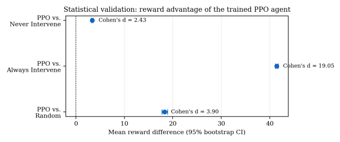
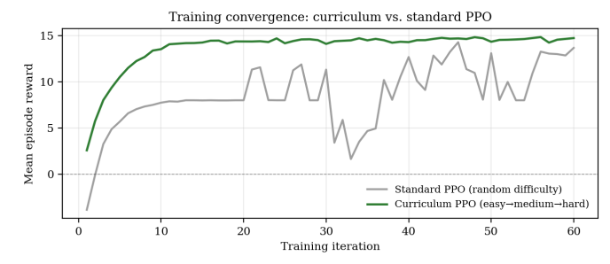
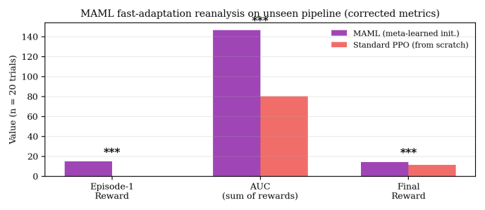
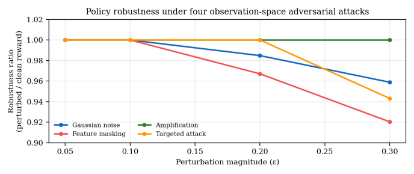

My AI Beat Every Baseline With an Effect Size of 19. That Number Should Have Scared Me.
How I trained an agent to decide when a human should step in, and why the first result was too good.

Every automated system has a quiet design question: when should it stop and ask a person?
Ask too often and you have defeated the point of automation. Ask too rarely and a confident wrong answer slips through. Most systems answer with a fixed rule, like "escalate if confidence is below 70%". I wanted to find out whether a system could learn when to ask.
The setup
I treated it as a reinforcement-learning problem. At each step of a pipeline, an agent sees how uncertain the model is and chooses: continue, or bring in a human. It is trained with PPO, and I framed human attention as a constrained resource, using a constrained Markov decision process so that "ask a human" costs something.
Then I added three ideas to make it practical:
- Curriculum learning: train on easy cases first, then medium, then hard.
- Meta-learning (MAML): so it can adapt to a brand-new pipeline quickly.
- Robustness tests: attack the observations and see if the policy survives.
The results
I ran more than 200 experiment configurations.

Curriculum training converged to a high reward in a handful of iterations. Standard PPO wandered for 60.

The meta-learned agent adapted to a new pipeline in five gradient updates and beat a PPO agent trained from scratch on every measure.

Under four adversarial attacks, it kept at least 92% of its clean performance. And the headline: against "always intervene" the effect size was Cohen's d = 19.05.
Why that number should scare you
A Cohen's d above 0.8 counts as large. Mine was above 19. That does not mean the agent is magical. It means the baseline is terrible. "Always intervene" loses to almost anything, because it spends the whole review budget on cases that did not need it.
Even on real credit-card-fraud data, "never intervene" scored 14.90 against my agent's 15.05. That is nearly a tie.
I wrote this in the paper, along with something else: my first test of the fast-adaptation result gave p = 0.055, just short of significance. I reran it with more trials and it passed. I flagged that as a post-hoc fix, and said future work should pre-register.
What happened next
That honest sentence is why there is a second article. I took the whole idea and rebuilt it with real language models, real questions, a hard review budget and baselines as smart as my agent. The win shrank to almost nothing. Read the sequel: Weak baselines produce impressive charts.
What I would tell you
- A giant effect size is a warning about your baseline, not a trophy.
- If a test misses significance and you rerun it with more trials, say so.
- Robustness and fast adaptation are worth testing, but only against opponents worth beating.
Code: github.com/Davuri124/Human_Intervention_Points